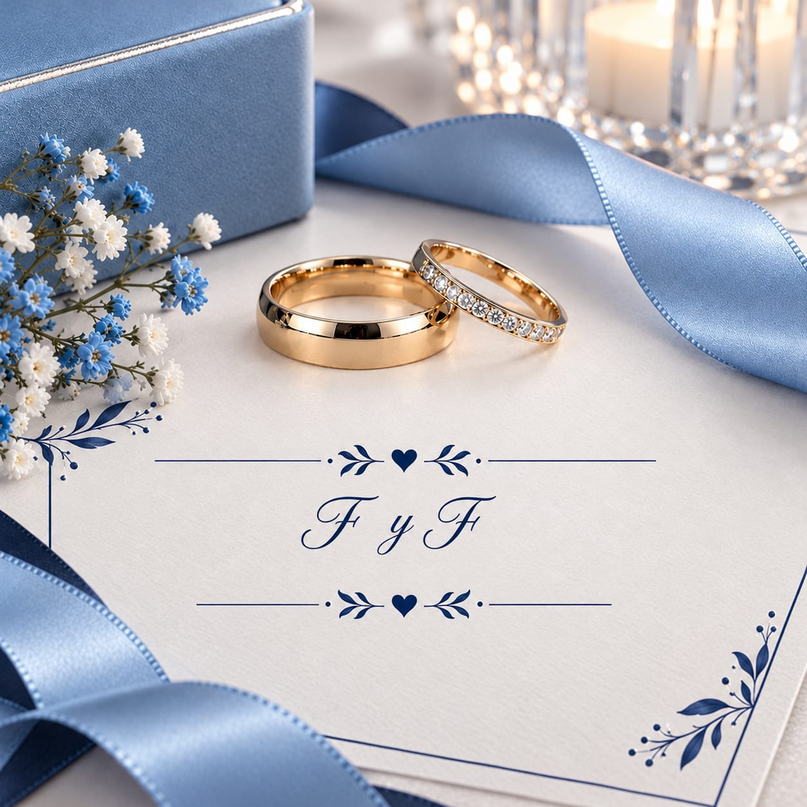
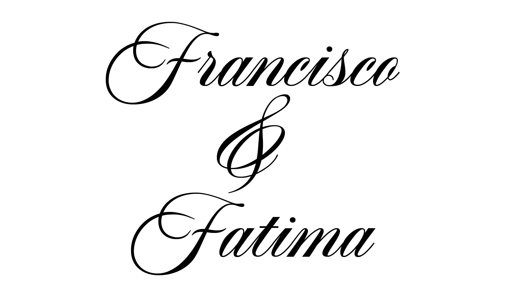

Nuestra Boda
Presiona el para escuchar nuestra canción



Con la bendición de nuestros padres
Padres de la Novia:
Miguel Reyes, Melina Guzmán y Sor Alva Reyes
Padres del Novio:
José Tomás Soto y Julia Medrano

Ceremonia Religiosa
4:00 pm
Parroquia San Nicolás de Bari
Nicolás Bravo, Canatlán, Dgo.
Recepción
5:00 pm
Casa de la novia
Nicolás Bravo, Canatlán, Dgo.
Comenzó la Cuenta Regresiva

RESERVA ESTA FECHA EN TU CALENDARIO
DICIEMBRE 2026
Itinerario
Código de Vestimenta
Casual - Formal
Mesa de Regalos
Su presencia es nuestro mejor regalo. Si desean tener un detalle con nosotros para iniciar esta nueva etapa, lo que nazca de su corazón será bien recibido.
Confirmación de Asistencia
Por favor, confirma tu asistencia para acompañarnos en este día tan especial.
Confirmar por WhatsAppLas mejores cosas de la vida son aún más fantásticas cuando se comparten con personas tan maravillosas como tú. ¡Te esperamos!